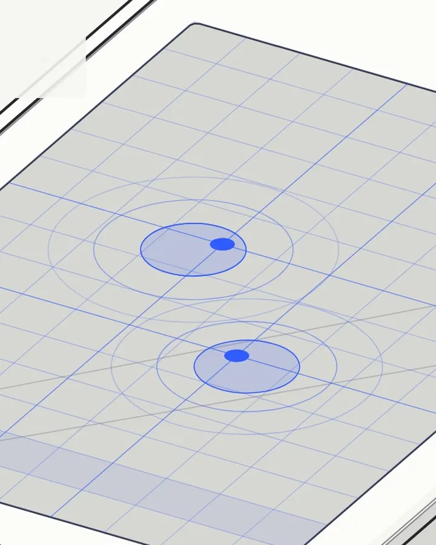

Fig 1.3.1mix.py・節錄整理
觸控的電子提示音
第一次觸碰前，畫面和聲音一起靜下來 0.7 秒。然後一聲用代碼合成的提示音：調頻的鈴聲、一下次低頻，再加兩次回聲，像觸點被點亮後泛開的漣漪。
def touch_tone(f=1318.5, v=1.0):
d = 1.6; x = t_(d)
mod = 2.0 * env_exp(d, .08) * sin(2*pi * f * 1.5 * x) # 調頻：一開始很亮
bell = sin(2*pi * f * x + mod) * env_exp(d, .35)
sub = sin(2*pi * 55 * x) * env_exp(d, .07) * .6 # 次低頻：「碰到了」
y = bell + sub
out = y.copy()
for k, g in ((.18, .35), (.36, .15)): # 兩次回聲＝漣漪
n = int(k * SR); out[n:] += y[:-n] * g
return out